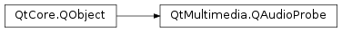

QAudioProbe¶
Synopsis¶
Signals¶
- def
audioBufferProbed(buffer) - def
flush()
Detailed Description¶
The
PySide2.QtMultimedia.QAudioProbeclass allows you to monitor audio being played or recorded.QAudioRecorder *recorder = new QAudioRecorder(); QAudioProbe *probe = new QAudioProbe; // ... configure the audio recorder (skipped) connect(probe, SIGNAL(audioBufferProbed(QAudioBuffer)), this, SLOT(processBuffer(QAudioBuffer))); probe->setSource(recorder); // Returns true, hopefully. recorder->record(); // Now we can do things like calculating levels or performing an FFT
-
class
PySide2.QtMultimedia.QAudioProbe([parent=nullptr])¶ Parameters: parent – PySide2.QtCore.QObjectCreates a new
PySide2.QtMultimedia.QAudioProbeclass with aparent. After setting the source to monitor withPySide2.QtMultimedia.QAudioProbe.setSource(), thePySide2.QtMultimedia.QAudioProbe.audioBufferProbed()signal will be emitted when audio buffers are flowing in the source media object.
-
PySide2.QtMultimedia.QAudioProbe.audioBufferProbed(buffer)¶ Parameters: buffer – PySide2.QtMultimedia.QAudioBuffer
-
PySide2.QtMultimedia.QAudioProbe.flush()¶
-
PySide2.QtMultimedia.QAudioProbe.isActive()¶ Return type: PySide2.QtCore.boolReturns true if this probe is monitoring something, or false otherwise.
The source being monitored does not need to be active.
-
PySide2.QtMultimedia.QAudioProbe.setSource(source)¶ Parameters: source – PySide2.QtMultimedia.QMediaRecorderReturn type: PySide2.QtCore.boolStarts monitoring the given
mediaRecorder.Returns true on success.
If there is no mediaObject associated with
mediaRecorder, or if it is zero, this probe will be deactivated and this function wil return true.If the media recorder instance does not support monitoring audio, this function will return false.
Any previously monitored objects will no longer be monitored. Passing in the same (valid) object will be ignored, but monitoring will continue.
-
PySide2.QtMultimedia.QAudioProbe.setSource(source) Parameters: source – PySide2.QtMultimedia.QMediaObjectReturn type: PySide2.QtCore.boolSets the media object to monitor to
source.If
sourceis zero, this probe will be deactivated and this function wil return true.If the media object does not support monitoring audio, this function will return false.
The previous object will no longer be monitored. Passing in the same object will be ignored, but monitoring will continue.
© 2018 The Qt Company Ltd. Documentation contributions included herein are the copyrights of their respective owners. The documentation provided herein is licensed under the terms of the GNU Free Documentation License version 1.3 as published by the Free Software Foundation. Qt and respective logos are trademarks of The Qt Company Ltd. in Finland and/or other countries worldwide. All other trademarks are property of their respective owners.